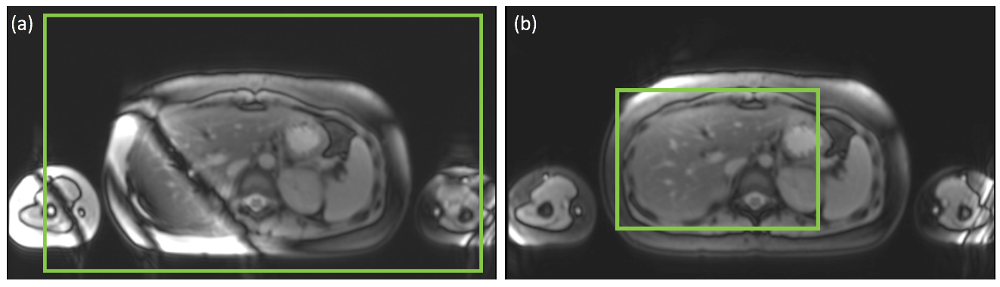
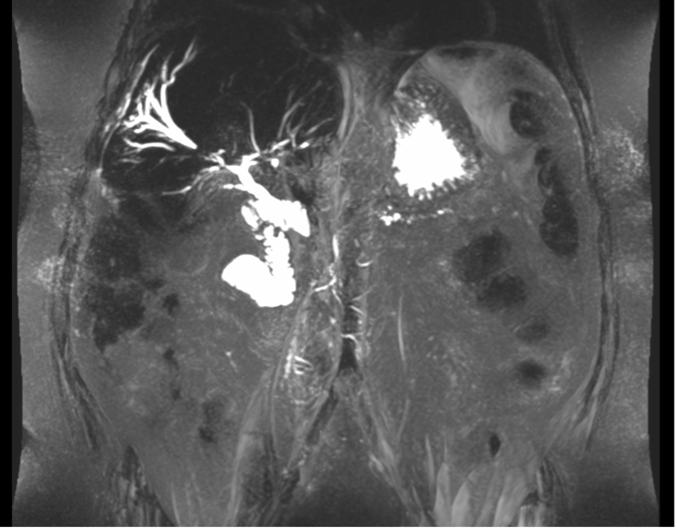
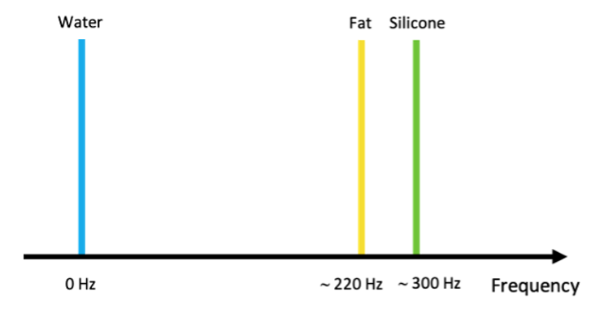
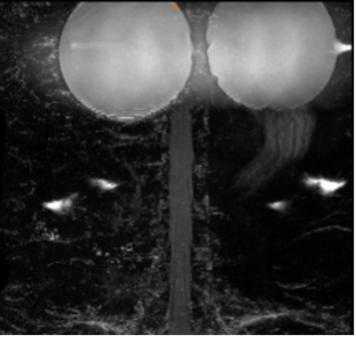
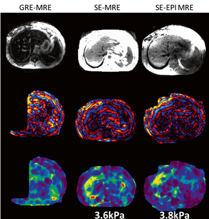

MR Troubleshooting
Mistriggering
If ECG or PPU triggering is used for some of the sequences, during the acquisition of these sequences, it is most important that the captured heartbeat is a corrected representation of the patient's heartbeat as displayed in Figure 43.
When trigger points are missed or trigger points are captured that do not represent the patient's heartbeat correctly, this is considered a mistrigger and the resulting parametric-maps may be affected. If a mistrigger occurs, please reacquire the affected LMS MOLLI sequence.
Caution
If any heartbeat is missed by the system triggering, the scan must be re-acquired. Mistriggering will result in erroneous parameter values.

Banding artefact
Banding artefacts appear as black bands in the LMS MOLLI sequence due to high field heterogeneity. An example is shown in Figure 44. If black bands appear in the liver, please repeat the acquisition after following the adjustments listed in the shimming section.
Caution
It is important to check for banding artefacts in the liver and repeat the acquisition after a new shim is forced. Banding artefacts in the liver can preclude accurate parameter mapping.
|  |
Motion and Breathing Artefact
Caution
Motion and breathing: The image will need to be re-acquired if there is a motion artefact due to breathing as shown in Figure 45.
Susceptibility Artefact
Caution
Susceptibility Artefacts
Magnetic susceptibility artefacts appear due to: poor shim, proximity to the lungs, bowel gas or metallic implants. Susceptibility artefacts in the liver will preclude accurate parameter estimation in the areas affected as shown in Figure 46.
Cropped FOV
FOV Cropped
FOV coverage: If the acquired image doesn't cover the whole liver or the whole spleen, as an example shown in Figure 47, increase the number of slices and ensure the entire craniocaudal extent of the liver and spleen is covered. The slice thickness should NOT be changed.
MRCP Artefact Trouble Shooting
Important
Motion artefact is one of the most common artefacts in the acquisition of a 3D MRCP series. This can be caused due to incorrect breathing patterns and/or patient movement during the scan.
Motion artefact can lead to ghosts ducts, ducts with incorrect width (leading to duct diameter higher than the real values) and unreal connections of biliary tree ducts with abdominal structures.
Please check during the acquisition the breathing pattern of the patient. Figure 48 below shows a MIP imaged of a 3D MRCP acquisition with motion artefact.
MRCP Incorrect Field of View Positioning
Incorrect Field of View (FOV) positioning can lead to inaccurate quantification of the biliary tree. This can lead to a significant amount of the biliary tree not being included in the slab acquisition. Figure 49 below shows an example of an incorrect FOV positioning that does not include the biliary tree on the raw data acquisition.
Please carefully check in all the localizers/images available and repeat the acquisition to make sure the biliary tree is included in the FOV.
MRCP Poor Fat Suppression
In patients with high fat content, the fat suppression techniques can be less efficient, and lead to the final image contains signal from fat (see Figure 50).
|  |
Figure 51 showed a schematic spectrum of water, fat and silicone under 1.5T field strength. Please verify the excitation frequency automatically defined by the scanner was adjusted to the water frequency and NOT the fat frequency. If not, please manually adjust the excitation frequency to the water frequency and re-acquire the sequence.
|  |
Presence of Breast Implants
Silicone Breast Implants
In patients with silicone breast implants, a frequency shift may occur due to the close frequency between water and silicon as shown in Figure 52.
Please verify the excitation frequency automatically defined by the scanner was adjusted to the water frequency and NOT the silicone frequency. If not, please manually adjust the excitation frequency to the water frequency.
Saline Breast Implants
In patients with saline breast implants as shown in Figure 53, the saline and water would probably be aggregate under the same water peak.
|  |
Please move the FOV lower and oblique to the 3D volume to exclude the breast implants from the area of RF excitation, keep the biliary tree inside the FOV and use saturation band(s) on the breast implants.
MR Elastography Troubleshooting
The periphery and/or the central part of the liver may be blacked out on the confidence map. This could be caused by several reasons which are described as following:
Patient Compliance
The patient may not have followed instructions with regards to motion and/or breath-hold. Make sure the patient is aware of the instructions. Repeat the acquisition if necessary.
Incorrect Passive Driver (drum) Placement
When the drum is placed incorrectly and/or insecurely, the propagation of waves can be poor and thus resulting in small usable regions on the stiffness maps. Re-position the drum as explained in MRE Passive Driver Placement and re-acquire the acquisition. Figure 54 displays the favourable driver (drum) placement.
Technical Issues
Confirm that all the receiver coils, the drum (passive driver) and the paddle are well connected and in proper working condition.
Confirm that the patient felt the vibrations of the drum during acquisition.
Confirm that the drum is secured tightly by the MRE band.
Confirm that MRE equipment (active driver) is "ON".
Check connections between drum (passive driver), tubing and active driver if vibration did not occur.
If wave images are sub-optimal, the driver amplitude may not have been sufficient for the patient size. Increase the driver amplitude and repeat the MRE scan.
Insufficient SNR
The lack of signal might be caused by several factors. Ensure the correct RF receiver coil has been selected in the prescription. The patient might suffer from iron overload in the liver. If this is the case, acquire the data with a SE based acquisition (Figure 55).
Please make sure to use SE-EPI-MRE if possible.
|  |